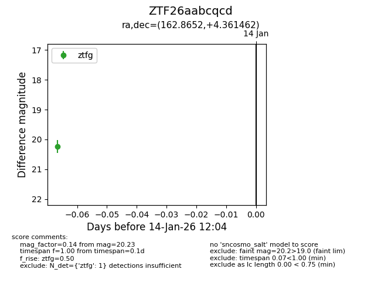
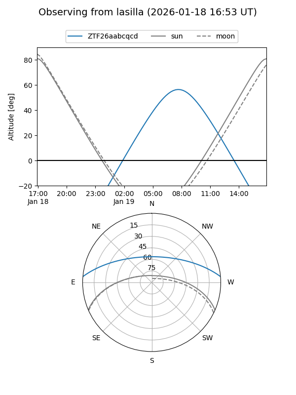
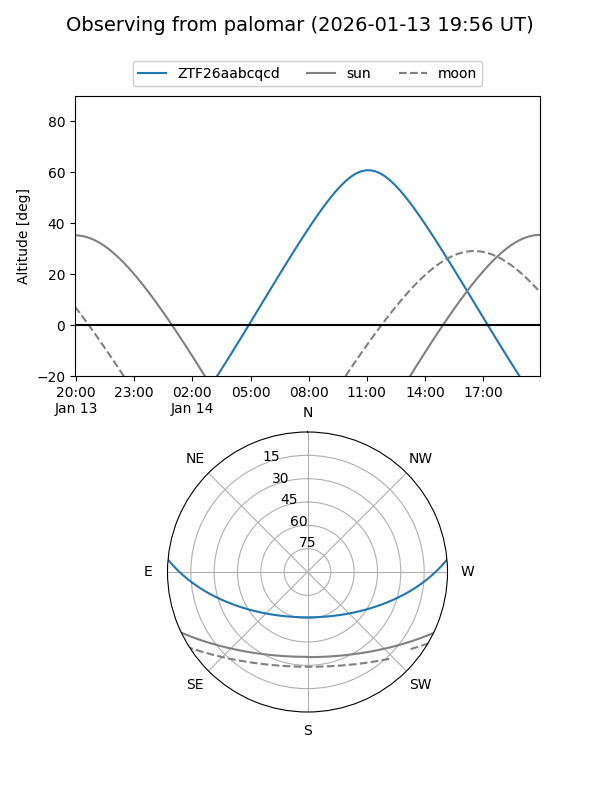

ZTF26aabcqcd
Target ZTF26aabcqcd at 2026-01-18 21:16
Aliases and brokers:
FINK: link
Lasair: link
ALeRCE: link
alt names
ZTF26aabcqcd (ztf,fink_ztf)
Coordinates:
equatorial (ra, dec) = 162.8652,+4.36146
equatorial (HMS+DMS) = 10:51:27.64,+04:21:41.26
galactic (l, b) = (246.1241,+53.44074)
Flags:
Photometry:
last ztfg=20.23
1 ztfg detections
Lightcurve

Visibility


Additional plots